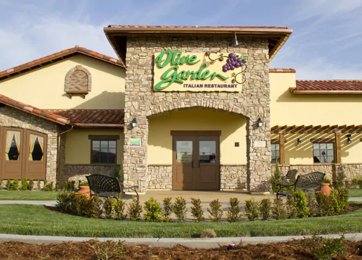
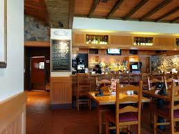
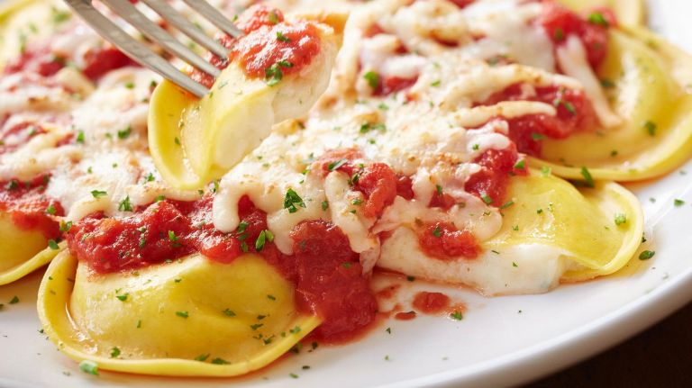
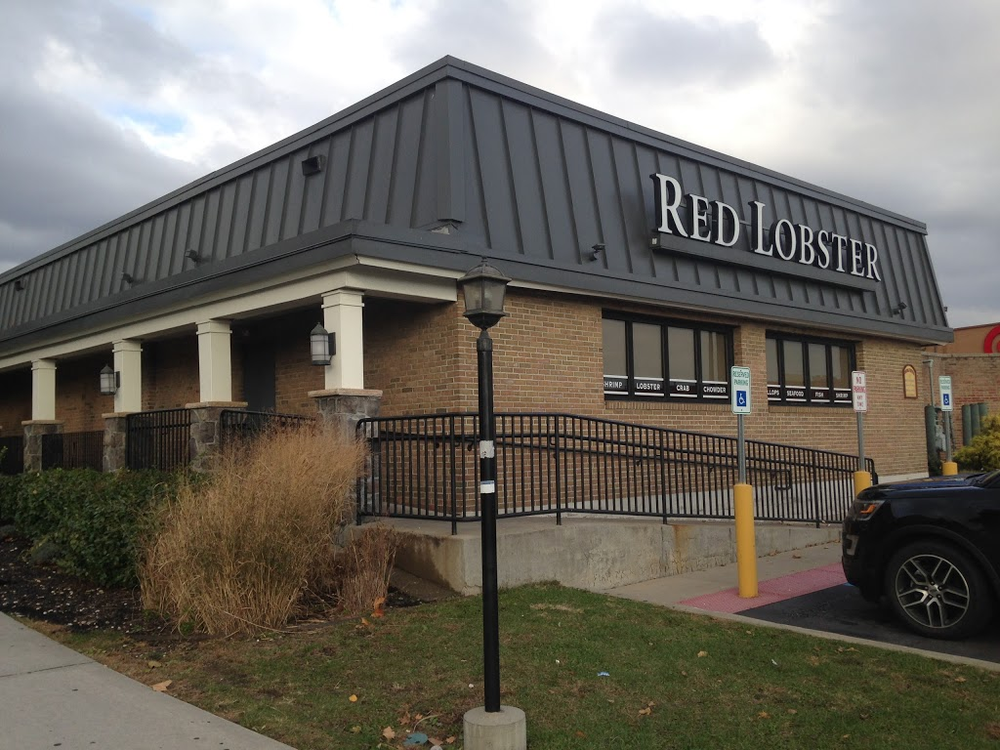
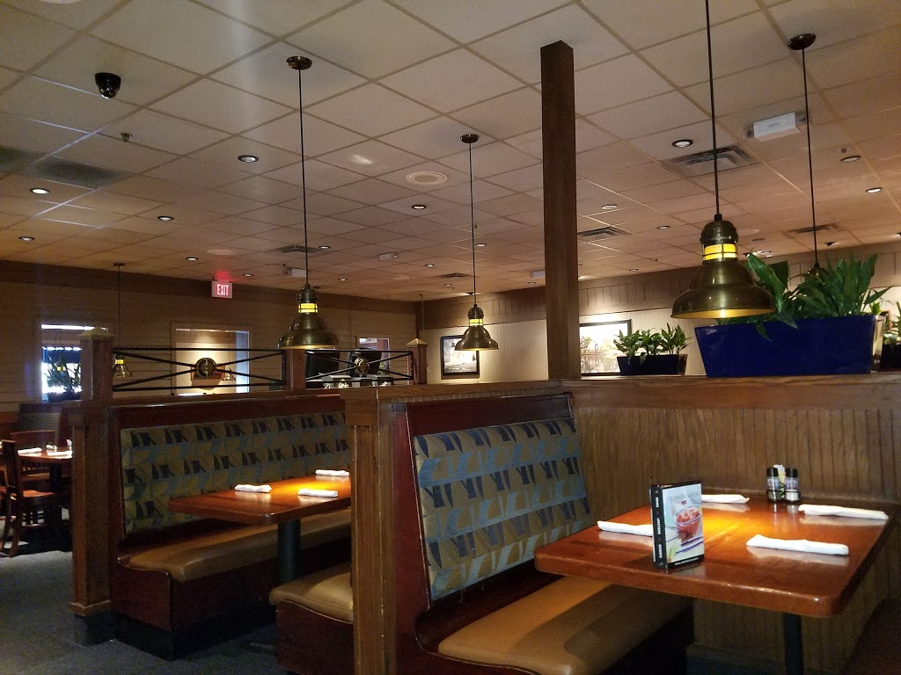
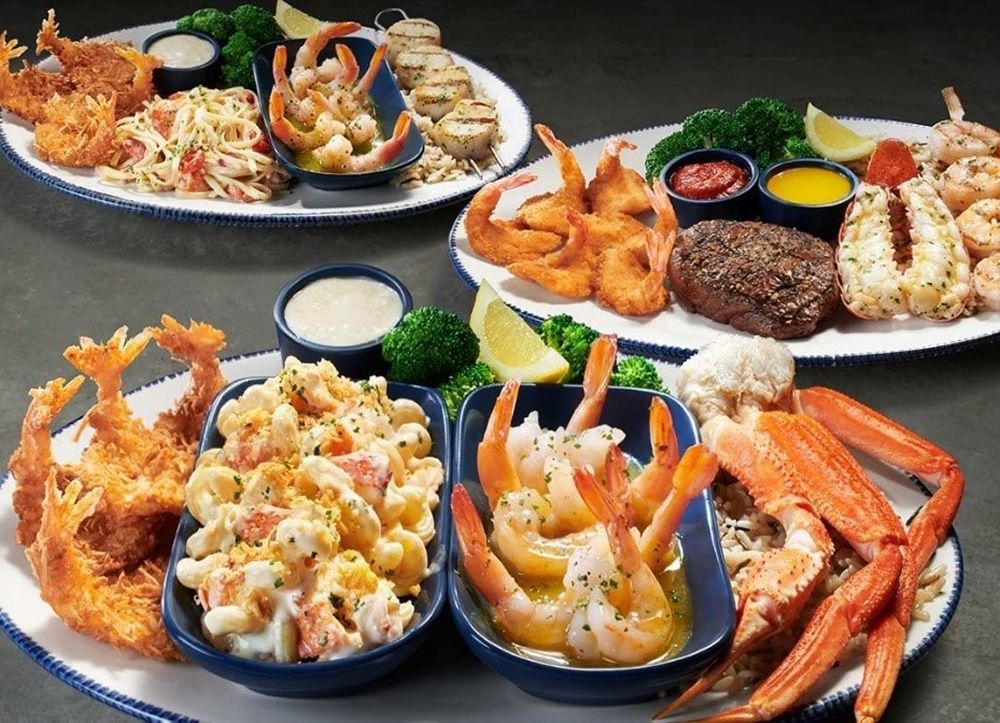
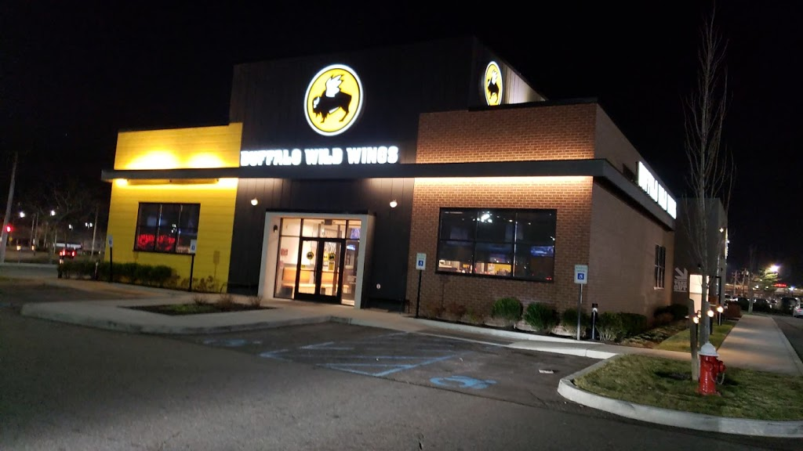
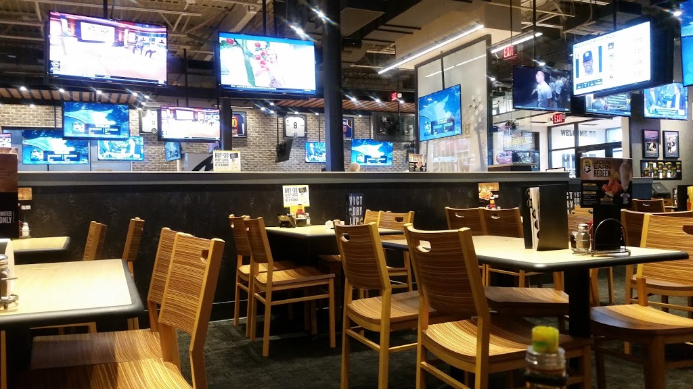
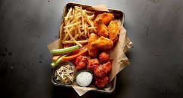

Places to Dine
in Valley Stream
Olive Garden
Olive Garden is an American casual dining restaurant chain specializing in Italian-American cuisine. It is a subsidiary of Darden Restaurants, Inc., which is headquartered in Orange County, Florida. Since its founding in Orlando in 1982, Olive Garden has been dedicated to providing a warm and welcoming dining experience to everyone who walks in the door. These principles combined with its delicious food led to rapid expansion until it was the largest chain of Italian themed restaurants in the nation.
  Red Lobster
Red Lobster is a casual dining restaurant focused on seafood. At Red Lobster, our passion for seafood drives how we create every dish, and comes through in how we source our seafood, and give back to our communities. Originally billed as a "Harbor for Seafood Lovers", the first restaurant was followed by four others throughout the southeastern United States. In 1970, General Mills acquired Red Lobster as a five-unit company. With new backing, the chain expanded rapidly in the 1980s.
  Buffalo Wild Wings
Buffalo Wild Wings' main attraction is its New York-style chicken wings, with the 16 varieties of sauces and five varieties of toppings or dips. The company's other menu items include sharable items and sides, including flatbreads, wraps, “buffalito” soft tacos, hamburgers, sandwiches, and salads. It all started in '82 with two guys driven by hunger. Since then, we've only gotten better at making wings, serving beer, and loving sports. Buffalo Wild Wings is an American casual dining restaurant and sports bar franchise in the United States, Canada, India, Mexico, Oman, Panama, Philippines, Saudi Arabia, United Arab Emirates, and Vietnam which specializes in Buffalo wings and sauces.
  